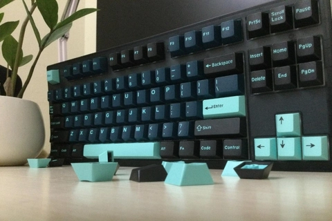

Blog
CASE SMOKE THÌ CHỌN KEYCAP GÌ???
Chơi keycap là một phần không thể thiếu đối với những người chơi phím chúng ta. Và chọn keycap để hợp với màu case lại càng phải làm nhưng cũng rất nan giải và phân vân. Tại đây, Kicap muốn giới thiệu tới các bạn một vài ba bộ keycap mà Kicap cho rằng rất phù hợp với một màu case rất phổ biến hiện nay: màu Smoke.
Với tông màu xanh đậm là chủ đạo còn xung quanh là một màu smoke, chúng không chìm màu nhau đi mà lại nâng nhau một cách nhẹ nhàng. Ngoài ra, bộ Snowy night này còn có những điểm nhấn nổi bật lên trong nền màu tối với các nút như Esc, Space, Enter… Bên cạnh những yếu tố màu sắc, keycap này được gia công với nhựa PBT bền, chắc, cứng cáp, bề mặt khá nhám, và in màu, in font bằng phương thức dyesub bền bỉ, đảm bảo đem lại trải nghiệm tốt trong tầm giá các bạn người dùng. Gần giống với Snowy night, nhưng lần này là trời đầy sao. Stargaze nhẹ nhàng hơn ở tông màu xanh đậm sáng hơn một chút, với điểm nhấn không nằm ở màu trắng như tuyết mà lại nằm ở màu vàng như ngôi sao. Các nút novelties cũng rất hấp dẫn và khác lạ cho các bạn muốn có một trời sao trên con phím màu Smoke của mình. “Lấy cảm hứng” từ GMK Monster, những anh pháp sư trung hoa CMK aka Aifei này đã không làm chúng ta thất vọng với một bộ keycap cực kì chất lượng với giá thành rẻ. Khác hoàn toàn với PBT dyesub như 2 bộ trên Kicap đã giới thiệu, thì bộ này lại dùng nhựa ABS với phương thức Doubleshot (dễ hiểu là đổ khuôn 2 lần) nhằm đảm bảo màu sắc và font chữ thật đẹp và sắc nét. Một tông màu đen – xanh, đi cùng với case Smoke là mướt hết xảy. Kicap rất khó chê sự kết hợp này và dám cá rằng các bạn cũng vậy!